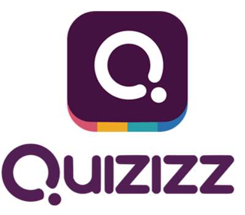
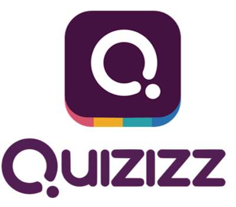
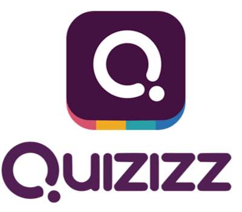
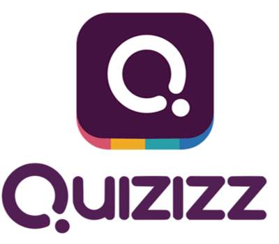

Segundo pesquisas, professores não acham essencial a plataforma Quizizz para o desenvolvimento dos alunos do colégio estadual.
Professores e alunos - colégio estadual professor Narciso Mendes.
07/03/2023 - 09h20 - Atualizado há 20 minutos
O descontentamento desse aplicativo é nítido entre alunos e professores não foi bem planejado é uma plataforma inconsistente com um intuito interessante mas com uma execução ruim.
A professora Márcia tem uma opinião forte sobre o site que está sendo discutido.
Márcia: não é bom não consigo enviar as lições não consigo entrar nos links não incentiva os alunos a fazer se tiver algo mais interessante seria mais fácil dos alunos fazem - completa outro professor - ninguém consegue acessar!
Tem professores que discordam da opinião da professora Márcia colocando que a parte da internet deve ser uma boa ferramenta de incentivo para os estudantes fazerem as tarefas.
A opinião a seguir é do professor Luiz Geraldo sendo positivo para a nova plataforma.
Luiz Geraldo:pode ajudar se for feito direitinho e se os alunos fizerem.
A opinião dos alunos foi negativa, todos os entrevistados concordam que a plataforma só atrapalha o que já está sendo difícil com o novo ensino médio.
O primeiro aluno entrevistado decidiu deixar sua opinião anônima.
Anônimo: horrível. O aluno é avaliado pela velocidade que faz as atividades ajudaria se a plataforma não existisse.
Já outro entrevistado já deu mais detalhes sobre o porquê não gostou da plataforma.
Guilherme Batista: péssima plataforma não agrega na educação do estudante tendo várias falhas.
Como vemos, o índice de desaprovação da plataforma é muito grande e deviam considerar a opinião das pessoas que usam essa plataforma diariamente e fazer mudanças significativas.